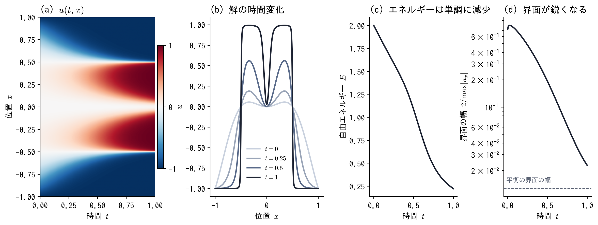

進捗：Allen–Cahn 方程式を数値計算で解いた2026-11-04
ut = 10−4 uxx + 5u − 5u3， x ∈ [−1, 1]（周期境界）， u(0, x) = x2 cos πx， t ∈ [0, 1]

- 解き方：Fourier スペクトル法（1024 モード）＋ 指数時間差分法 ETDRK4（Δt = 10−5）
- 確認：Δt を 2 倍にしても差 1.8 × 10−11，モード数を半分にしても差 1.5 × 10−6．エネルギーは毎ステップ減少
- 界面は時間とともに鋭くなり，t = 1 で幅 約 0.023（平衡の幅 0.013 に近づいていく）